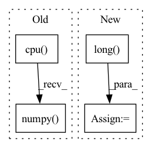

Pattern ID :26486
Before Change
for data in test_loader:
x = data[0].squeeze(0).squeeze(0).detach().cpu().numpy()
y = data[1].squeeze(0).squeeze(0).detach().cpu().numpy()
x_seg = data[2].squeeze(0).squeeze(0).detach().cpu().numpy()
y_seg = data[3].squeeze(0).squeeze(0).detach().cpu().numpy()
x = ants.from_numpy(x)
y = ants.from_numpy(y)
After Change
y = data[1].squeeze(0).squeeze(0).detach().cpu().numpy()
x_seg = data[2] // .squeeze(0).squeeze(0).detach().cpu().numpy()
x_seg_oh = nn.functional.one_hot(x_seg.long() , num_classes=46)
x_seg_oh = torch.squeeze(x_seg_oh, 1)
x_seg_oh = x_seg_oh.permute(0, 4, 1, 2, 3).contiguous()
x_seg_oh = x_seg_oh.squeeze(0).detach().cpu().numpy()
y_seg = data[3].squeeze(0).squeeze(0).detach().cpu().numpy()
In pattern: SUPERPATTERN
Frequency: 3
Non-data size: 4
Instances Fragment ID: 79462476
Project Name: junyuchen245/transmorph_transformer_for_medical_image_registration
Commit Name: 0612d1a704653ff98a92a228ecaefd2023577062
Time: 2022-09-07
Author: jchen245@jhmi.edu
File Name: IXI/Baseline_traditional_methods/SyN/infer_IXI.py
M Class Name: AnonimousClass
N Class Name: AnonimousClass
M Method Name: main(0)
N Method Name: main(0)
M Parent Class:
N Parent Class:
M File Name: IXI/Baseline_traditional_methods/SyN/infer_IXI.py
N File Name: IXI/Baseline_traditional_methods/SyN/infer_IXI.py
M Start Line: 57
M End Line: 86
N Start Line: 58
N End Line: 96
Before Change
tensor = self.zca.apply(tensor)
else:
// print("No Zca")
tensor = tensor.data.cpu().numpy()
if self.eval is False and FLAGS.translate > 0:
bs, lenx, leny = tensor.shape[0], tensor.shape[2], tensor.shape[3]
pad = FLAGS.translateAfter Change
tensor = F.pad(tensor, [pad, pad, pad, pad])
index = np.random.randint(0, pad * 2, size=[2, bs])
indexx, indexy = index[0], index[1]
inv_idx = torch.arange(leny - 1, -1, -1).long() .cuda()
new_tensor_list = []
for i in range(bs): Fragment ID: 79462473
Project Name: taufikxu/triple-gan
Commit Name: 5f4d74f329e6b493abfbc1b1d9fe79acb0eda810
Time: 2020-06-19
Author: kunxu.thu@gmail.com
File Name: library/data_iters.py
M Class Name: AugmentWrapper
N Class Name: AugmentWrapper
M Method Name: __call__(2)
N Method Name: __call__(2)
M Parent Class: object
N Parent Class: object
M File Name: library/data_iters.py
N File Name: library/data_iters.py
M Start Line: 78
M End Line: 110
N Start Line: 83
N End Line: 106
Before Change
(def_seg, _, _, _) = lddmm.applyThisTransform(x_seg, interpmode="nearest")
flow = lddmm.computeThisDisplacement()
flow = np.stack(flow, axis=0)
def_seg = def_seg[-1].cpu().numpy()
def_seg = torch.from_numpy(def_seg[None, None, ...])
tar_seg = torch.from_numpy(y_seg[None, None, ...])
dsc_trans = utils.dice_val(def_seg.long(), tar_seg.long(), 46)
After Change
eval_det = AverageMeter()
with torch.no_grad():
for data in test_loader:
x_seg_oh = nn.functional.one_hot(data[2].long() , num_classes=46)
x_seg_oh = torch.squeeze(x_seg_oh, 1)
x_seg_oh = x_seg_oh.permute(0, 4, 1, 2, 3).contiguous().float().detach().cpu().numpy()
x = data[0].squeeze(0).squeeze(0).detach().cpu().numpy()
y = data[1].squeeze(0).squeeze(0).detach().cpu().numpy()
x_seg = data[2].squeeze(0).squeeze(0).detach().cpu().numpy()
Fragment ID: 79462468
Project Name: junyuchen245/transmorph_transformer_for_medical_image_registration
Commit Name: ec64eeca27e8c76ff542d65f42b73a4ec8c82640
Time: 2022-09-07
Author: jchen245@jhmi.edu
File Name: IXI/Baseline_traditional_methods/LDDMM/infer_IXI.py
M Class Name: AnonimousClass
N Class Name: AnonimousClass
M Method Name: main(0)
N Method Name: main(0)
M Parent Class:
N Parent Class:
M File Name: IXI/Baseline_traditional_methods/LDDMM/infer_IXI.py
N File Name: IXI/Baseline_traditional_methods/LDDMM/infer_IXI.py
M Start Line: 62
M End Line: 83
N Start Line: 59
N End Line: 92